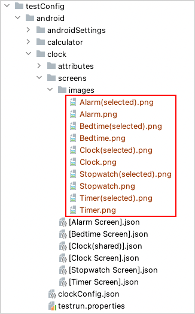

Image assertion
You can assert image using these functions.
functions
| function |
|---|
| imageIs |
| imageContains |
| isImage |
| isContainingImage |
| exist |
| existWithScrollDown |
| existWithScrollUp |
| existWithScrollRight |
| existWithScrollLeft |
| dontExist |
| dontExistWithScrollDown |
| dontExistWithScrollUp |
Example
Getting image files
Get image files for template matching.
See Cropping images for template matching.
Images directory
- Create image directory under Put images files in images directory.

Screen nickname file
Define image nicknames in screen nickname file. File name must be unique.
[Clock(shared)].json
(testConfig/android/clock/screens/[Clock(shared)].json)
{
"key": "[Clock(shared)]",
"selectors": {
"[Alarm Tab]": "#tab_menu_alarm",
"[Alarm Image]": "Alarm.png",
"[Alarm Image(selected)]": "Alarm(selected).png",
"[Clock Tab]": "#tab_menu_clock",
"[Clock Image]": "Clock.png",
"[Clock Image(selected)]": "Clock(selected).png",
"[Timer Tab]": "#tab_menu_timer",
"[Timer Image]": "Timer.png",
"[Timer Image(selected)]": "Timer(selected).png",
"[Stopwatch Tab]": "#tab_menu_stopwatch",
"[Stopwatch Image]": "Stopwatch.png",
"[Stopwatch Image(selected)]": "Stopwatch(selected).png",
"[Bedtime Tab]": "#tab_menu_bedtime",
"[Bedtime Image]": "Bedtime.png",
"[Bedtime Image(selected)]": "Bedtime(selected).png"
}
}
Sample program
AssertingImage1.kt
(kotlin/tutorial/basic/AssertingImage1.kt)
package tutorial.basic
import org.junit.jupiter.api.Order
import org.junit.jupiter.api.Test
import shirates.core.configuration.Testrun
import shirates.core.driver.commandextension.*
import shirates.core.testcode.UITest
@Testrun("testConfig/android/maps/testrun.properties")
class AssertingImage1 : UITest() {
/**
* Note:
*
* Run CroppingImages1.kt(tutorial.inaction.CroppingImages1)
* before running this sample
* to set up template image files.
*/
@Test
@Order(10)
fun imageIs_isImage_OK() {
scenario {
case(1) {
condition {
it.macro("[Maps Top Screen]")
}.expectation {
it.select("[Explore Tab]").imageIs("[Explore Tab Image(selected)]") // OK
it.select("[Explore Tab]").isImage("[Explore Tab Image(selected)]").thisIsTrue() // OK
}
}
}
}
@Test
@Order(20)
fun imageIs_NG() {
scenario {
case(1) {
condition {
it.macro("[Maps Top Screen]")
}.expectation {
it.select("[Go Tab]").imageIs("[Go Tab Image(selected)]") // NG
}
}
}
}
@Test
@Order(30)
fun checkingTabState() {
scenario {
case(1) {
condition {
it.macro("[Maps Top Screen]")
}.expectation {
it.select("[Explore Tab]").imageIs("[Explore Tab Image(selected)]")
it.select("[Go Tab]").imageIs("[Go Tab Image]")
it.select("[Saved Tab]").imageIs("[Saved Tab Image]")
it.select("[Contribute Tab]").imageIs("[Contribute Tab Image]")
it.select("[Updates Tab]").imageIs("[Updates Tab Image]")
}
}
case(2) {
action {
it.tap("[Go Tab]")
}.expectation {
it.select("[Explore Tab]").imageIs("[Explore Tab Image]")
it.select("[Go Tab]").imageIs("[Go Tab Image(selected)]")
it.select("[Saved Tab]").imageIs("[Saved Tab Image]")
it.select("[Contribute Tab]").imageIs("[Contribute Tab Image]")
it.select("[Updates Tab]").imageIs("[Updates Tab Image]")
}
}
case(3) {
action {
it.tap("[Saved Tab]")
}.expectation {
it.select("[Explore Tab]").imageIs("[Explore Tab Image]")
it.select("[Go Tab]").imageIs("[Go Tab Image]")
it.select("[Saved Tab]").imageIs("[Saved Tab Image(selected)]")
it.select("[Contribute Tab]").imageIs("[Contribute Tab Image]")
it.select("[Updates Tab]").imageIs("[Updates Tab Image]")
}
}
case(4) {
action {
it.tap("[Contribute Tab]")
}.expectation {
it.select("[Explore Tab]").imageIs("[Explore Tab Image]")
it.select("[Go Tab]").imageIs("[Go Tab Image]")
it.select("[Saved Tab]").imageIs("[Saved Tab Image]")
it.select("[Contribute Tab]").imageIs("[Contribute Tab Image(selected)]")
it.select("[Updates Tab]").imageIs("[Updates Tab Image]")
}
}
case(5) {
action {
it.tap("[Updates Tab]")
}.expectation {
it.select("[Explore Tab]").imageIs("[Explore Tab Image]")
it.select("[Go Tab]").imageIs("[Go Tab Image]")
it.select("[Saved Tab]").imageIs("[Saved Tab Image]")
it.select("[Contribute Tab]").imageIs("[Contribute Tab Image]")
it.select("[Updates Tab]").imageIs("[Updates Tab Image(selected)]")
}
}
}
}
}
On unexpected NG occurs
You can see template_image.png (expected image) and cropped_image.png (actual image) in the log directory.
Note
See WARNING: An illegal reflective access operation has occurred